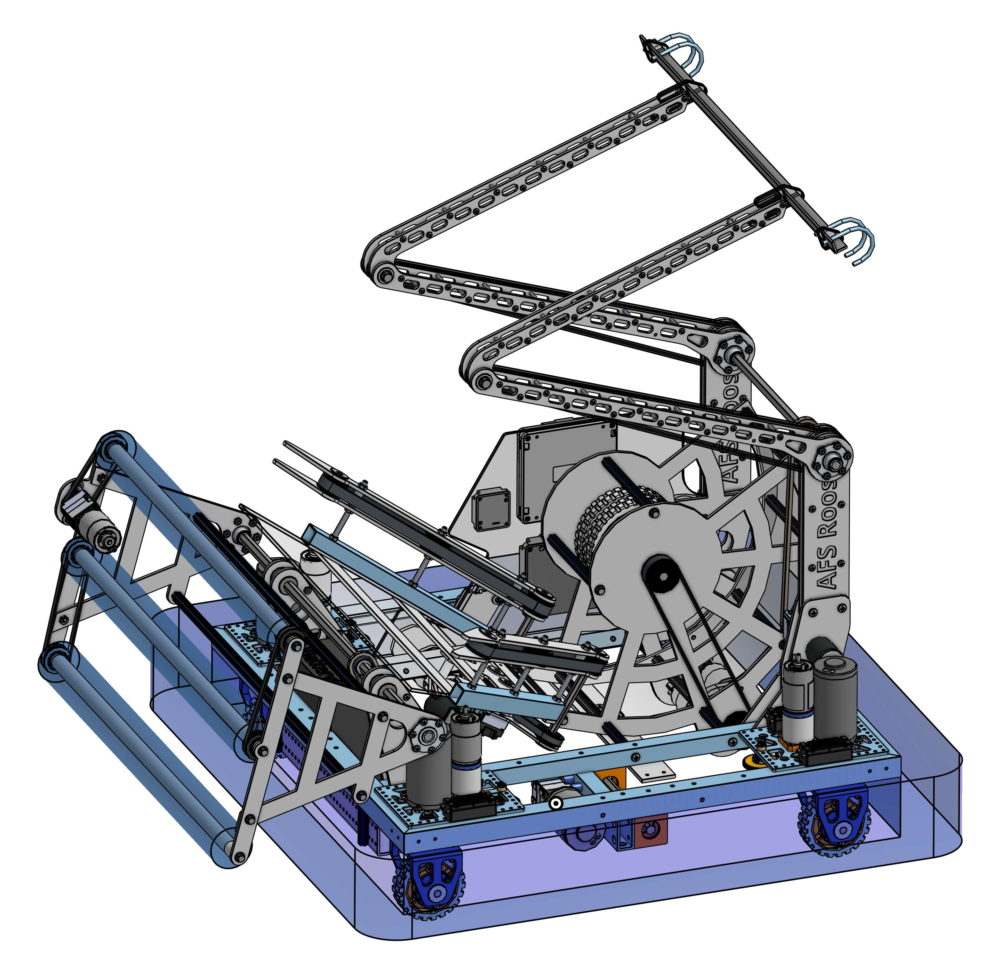
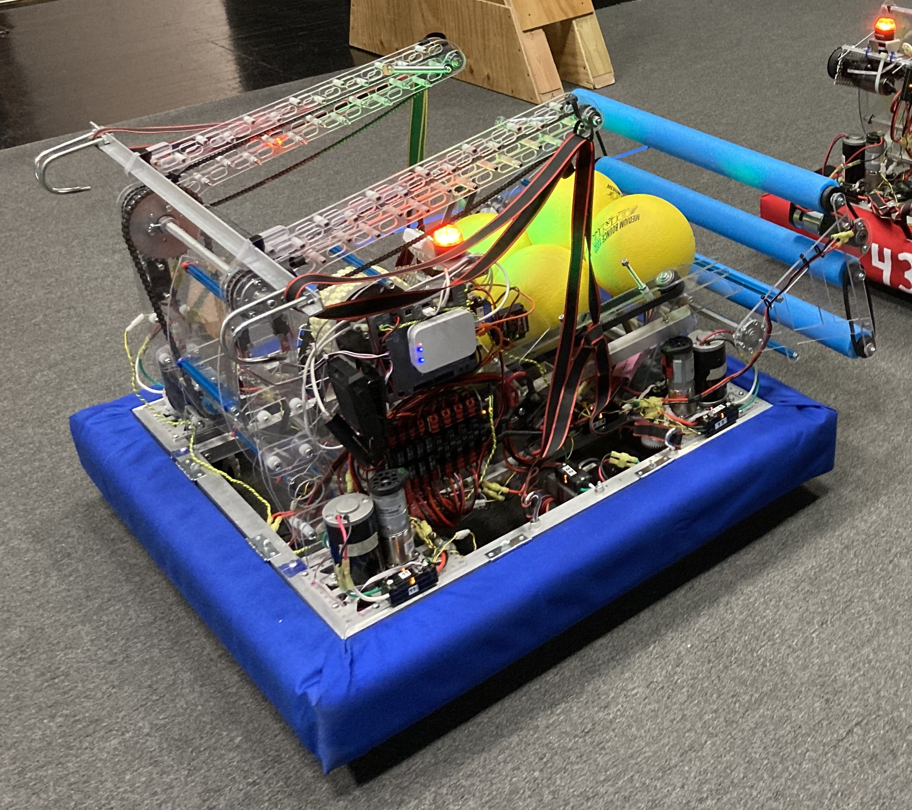
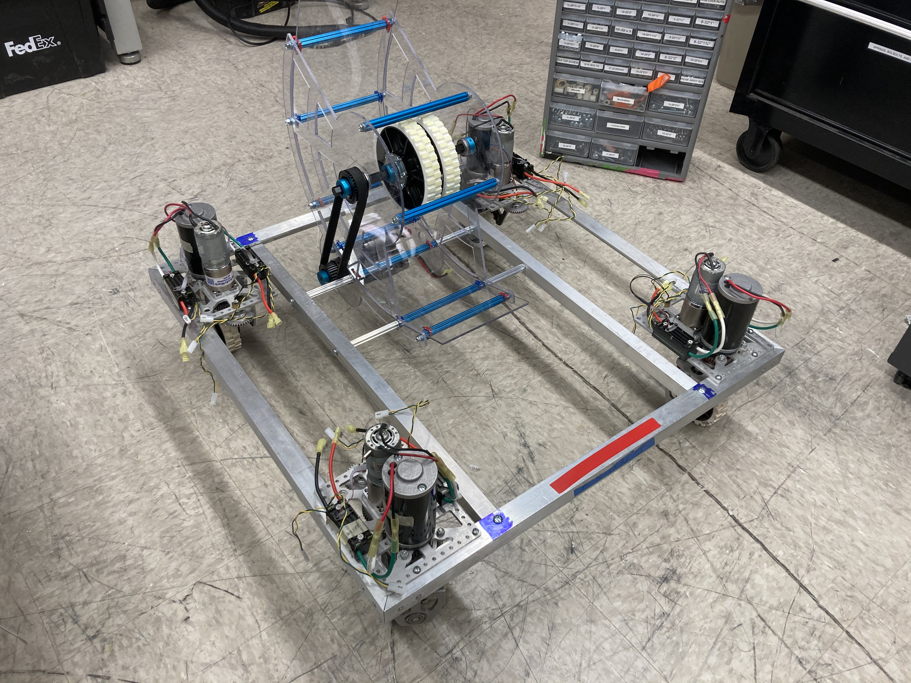
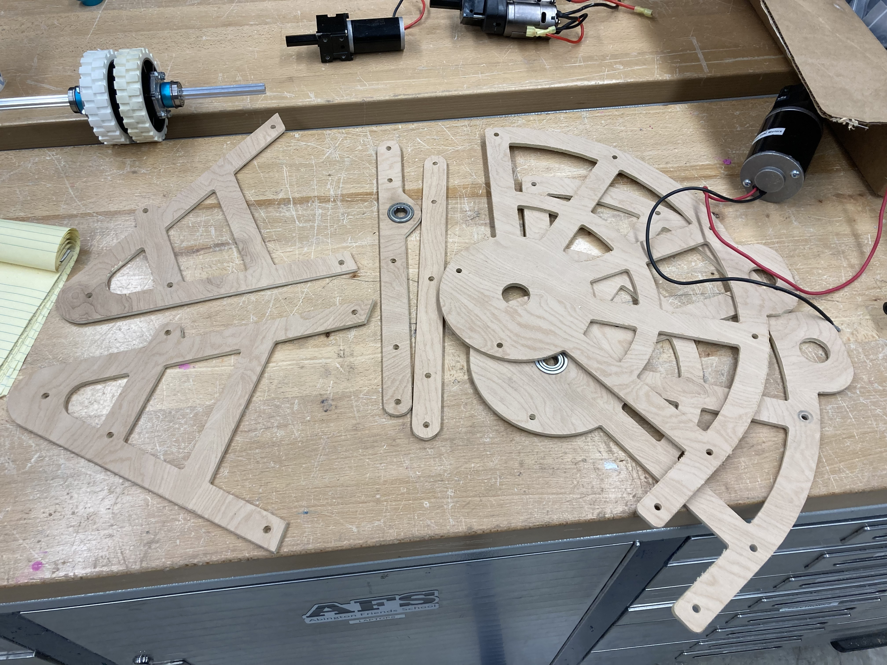

In many ways the 2020-21 season was an iteration of the previous year, as FIRST mostly recycled the unplayed game rules and we institutionalized as many of the best practices as we could from the prior year (along with some of the design goals).

The 2020-21 AFS Robotics CAD model, done in Onshape.

The final robot as built matches the CAD model exactly.
We continued to invest in learning and using CAD, and in honing our CNC fabrication skills. We again dedicated and even increased the time spent in the prototyping phase.
We created a much better (wider and more reliable) ball intake and outstanding ball storage and feeder system.
The launcher remained largely unchanged, although the motor assembly was better integrated and moved to the bottom so as to further lower the center of gravity.
Again optimizing for a compact, low slung robot, we had to practice continual integration as we developed each subsystem, so that they would all fit inside the bounds of the robot and work together. One small illustration of this philosophy is the mounting of the launcher shown in the photo to the right. Two of the blue rods that define the distance between the sides of the launcher are also through-bolted to silver extensions that secure the launcher between the inner beams of the robot. Those inner beams also support the inboard edges of the four swerve units. A bit of shock absorption and dampening are a bonus characteristic of this arrangement.
The result of following this philosophy throughout the project is a simpler, more elegant design with fewer parts to fabricate, fewer points of failure, and easier servicing.
One of the two drive bases with launcher attached for testing .

After a successful proof of concept, a middle stage prototype of the ball hopper was made from plywood because it is quick and easy to work and adjust. Angles and spacing were tweaked and tested to find the speediest and most reliable storage/feed geometry.

Quarter inch plywood was an inexpensive and susatinable material for making these prototype intake and launcher parts. Exported from CAD and cut on the CNC machine, they would never survive competition but suited iterative testing just fine.
Angled belts run at different speeds to prevent jams, and also serve as the gate to hold then feed balls to the launcher.
Sadly this year also saw the cancellation of all events, so once again the team never got to compete with this robot.
Design features:
• Ultra compact design for low center of gravity and clearance through playfield tunnel (again)
• Battery and winch motors located in undercarriage of robot for stability (again)
• All four swerve drive units were identical, with locally-mounted motor controllers, to enable totally modular service / replacement (again)
• All electronics installed on a single panel for easy access and troubleshooting
• New ball intake used one motor to drive three rollers to gather balls along the entire 30" front length of the robot
• V-shaped, inclined hopper stored up to the game limit of five balls, and funneled them towards the center launcher inlet
• Single motor and custom gearbox drove both hopper belts in different directions and at slightly different speeds to unjam ball feed
• Belt spacing at narrow end of hopper stops balls just before launcher, then actively delivers them on demand at a consistent velocity
• A single motor operated the hook delivery arms, which used #25 chain to automatically open the 'elbow' as the 'shoulder' was rotated